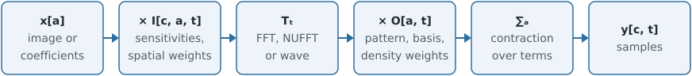
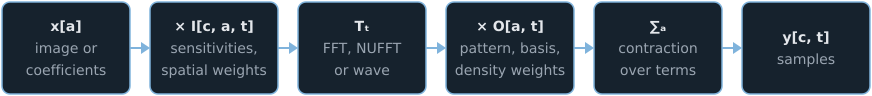

The MRI encoding operator#
TL;DR
The SENSE forward model is \(A = PFS\); coil sensitivities make an undersampled acquisition solvable within the limits of the coil geometry.
Every encoding bartorch builds is one expression, \(y = \sum_a O \cdot T(I \cdot x_a)\): an image-side factor, a transform (FFT, NUFFT or wave), a k-space-side factor and a contraction, applied by one executor a slab of coils at a time.
Compositions written with
@and+are matched against that form when first used;A.planreports the result, including a fallback to a chain of operators.The normal operator \(A^H A\) is applied through a kernel — the sampling pattern on a grid, a point spread function on a doubled grid off it — or, where no kernel exists, as the forward operator followed by the adjoint.
The forward operator of an MRI reconstruction maps an object to the signal the experiment would have measured. This page derives it for parallel imaging, states the single expression bartorch represents every encoding with, and describes how compositions of operators are built into that expression and how its normal operator is applied.
Sensitivity encoding#
A receive coil measures the transverse magnetization of the object, weighted by the coil’s spatial sensitivity and integrated against the phase imposed by the gradients. With \(x(r)\) the object at position \(r\), \(S_c(r)\) the sensitivity of coil \(c\) and \(k_j\) the k-space position of sample \(j\), in cycles per unit length,
On a voxel grid this is the composition
the SENSE forward model:[1] \(S\) maps an image to one coil image per channel, \(F\) is the Fourier transform of each coil image, and \(P\) selects the acquired samples.
With \(R\)-fold Cartesian undersampling, each voxel of a coil image obtained by the inverse FFT of the undersampled data is the superposition of \(R\) object voxels separated by \(\mathrm{FOV}/R\). For \(C\) coils the aliased voxels satisfy \(C\) equations in \(R\) unknowns; they are determined when \(C \ge R\) and the sensitivity vectors of the aliased voxels are linearly independent, and the conditioning of this small system — the g-factor — sets the noise amplification. Coil sensitivities therefore make an accelerated acquisition solvable within the limits of the coil geometry; beyond them, and outside the object, the system is underdetermined or poorly conditioned and a regularized estimate is needed (Inverse problems and their solvers).
The sensitivities are smooth functions of position, estimated from the data:
ecalib() by ESPIRiT from a fully sampled region of the
k-space centre,[2] ncalib() from non-Cartesian
samples, and Nonlinear forward models treats their estimation jointly with the image.
The encoding form#
Wave-encoded, subspace-constrained, off-resonance-corrected and simultaneous multislice acquisitions each modify \(PFS\). bartorch represents all of them by one expression: for coil \(c\), encoding frame \(t\) and sample \(j\),
{kind=link}

{kind=link}

Symbol |
Name |
Instances |
|---|---|---|
\(I\) |
Image-side factor |
Coil sensitivities; spatial weights of the terms of a contraction, such as the field-map phase of a time segment |
\(T\) |
Transform |
FFT on the image grid; NUFFT along a trajectory (Non-Cartesian sampling); wave encoding, an FFT with a point spread function between the readout and phase-encode transforms[3] |
\(O\) |
K-space-side factor |
Sampling pattern or table of sampled phase encodes; density weights; subspace basis;[4] sample weights of the terms of a contraction |
\(\sum_a\) |
Contraction |
Subspace coefficients; time segments of an off-resonance correction;[5] slices of a simultaneous multislice acquisition |
With \(I\) the sensitivities, \(T\) the FFT, \(O\) a sampling pattern and no
contraction, the expression is \(A = PFS\). CartesianSense(),
NoncartesianSense, WaveSense()
and FieldCorrected() each construct an instance, and one
executor applies all of them. It processes the coils a slab at a time, so
that the coil images and their transforms are never held for all coils at
once, and keeps the element-wise factors in the same pass as the transform.
Composition and lowering#
Composing operators with @ and + records a description instead of building
an operator. The first operation that needs the built operator — an
application, .H, a solve, or reading .plan — passes the whole description
to a planner, which matches it against the encoding form. Where it matches,
the composition is built as one encoding (lowering); a time-segmented
off-resonance correction written term by term is therefore built into the same
operator FieldCorrected() gives. Where it does not
match — for example, a spatial weight that differs between sets of
sensitivities, which the form cannot carry because the sets are contracted
before the image-side factor is applied — the composition is built as BART’s
chain of operators, with the same result and a higher cost.
A.plan reports the outcome, read back from the library after the operator is
built:
Field |
Reports |
|---|---|
|
|
|
The element-wise factors on each side of the transform |
|
|
|
How \(A^H A\) is applied: |
|
Coils per slab, and what is processed a slab at a time |
|
|
|
|
The normal operator#
CG and the proximal-gradient methods apply \(A^H A\) once per iteration, and ADMM
once per iteration of its inner solve. For the encoding form it is applied in
one of three ways, which plan.normal names.
Cartesian sampling ("kernel"). With a binary pattern \(P\),
\(A^H A = S^H F^H P F S\): for each coil, multiplication by \(S_c\), an FFT,
multiplication by the pattern, an inverse FFT, and multiplication by
\(\overline{S_c}\), summed over the coils. With a subspace basis \(\Phi\) the
k-space factor becomes a kernel over pairs of coefficients,
\(K_{aa'}(k) = \sum_t \overline{\Phi_{at}}\, \Phi_{a't}\, P_t(k)\), computed
once when the operator is built rather than summed over frames at every
iteration.
Non-Cartesian sampling ("kernel"). The normal operator of the transform
alone, \(Q = \mathrm{NUFFT}^H W^H W\, \mathrm{NUFFT}\), is a convolution with the
point spread function of the weighted trajectory, evaluated exactly on a grid
doubled in each dimension (Non-Cartesian sampling).[6] The full SENSE
normal operator is
which is not translation invariant: the sensitivities vary in space, so only the transform’s normal \(Q\) is a convolution. It is applied coil by coil as multiplication by \(S_c\), zero-padding to the doubled grid, an FFT, multiplication by \(\hat h\), an inverse FFT, cropping, and multiplication by \(\overline{S_c}\). With a subspace basis, \(\hat h\) becomes a kernel over pairs of coefficients, as in the Cartesian case.
Forward and adjoint ("applications"). bartorch builds no kernel for a
contraction over terms — the segments of an off-resonance correction, the
slices of a simultaneous multislice acquisition — for a slice phase, for a
wave pattern that varies along the readout, or when toeplitz=False; \(A^H A\)
is then applied as the forward operator followed by the adjoint. "transform" names the case with no
k-space factor, where the transform’s own normal operator is the whole of it.
Encoding axes and batch axes#
Axis |
Definition |
Examples |
Cost |
|---|---|---|---|
Encoding axis |
Indexed by the trajectory or the sampling pattern |
Frames, echoes, cardiac phases |
Joins the samples of one transform when the image does not vary along it; one transform per item when it does |
Batch axis |
Not indexed by the trajectory; items share the trajectory and are encoded independently |
Slices, averages, repetitions |
One transform plan for all items, applied to each |
Where a subspace basis contracts an encoding axis, the image carries
coefficients rather than frames, and every sample the trajectory indexes
belongs to one point set: the frames join the shots and the readout samples in
one transform. Where the image itself varies along the axis — a dynamic
series of frames — each item has its own transform and normal kernel inside the
one operator, applied under the same coil loop, and plan.items reports their
number. Under BART’s own commands the non-uniform FFT substitution refuses an
image that varies along a trajectory axis, with the reason.